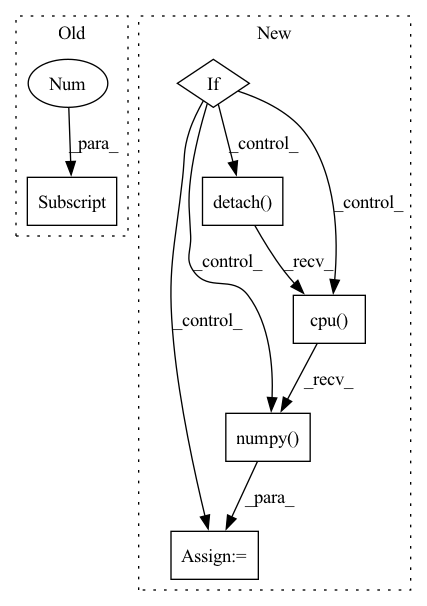

Pattern ID :11466
Before Change
adv_log_pi = adv_log_pi.detach().cpu().numpy().flatten()
if return_logits:
logits_pi = outs[-1]
logits_adv = self._adversary.forward(
observation, deterministic, return_log_prob=True
)[-1]
logits_pi = logits_pi.detach().cpu().numpy().flatten()
logits_adv = logits_adv.detach().cpu().numpy().flatten()
return action, log_pi, adv_log_pi, logits_pi, logits_adv
return action, log_pi, adv_log_piAfter Change
// compute additional distribution information
actor_distrib = self._actor.compute_distribution(observation)
adversary_distrib = self._adversary.compute_distribution(observation)
if self._discrete:
params_pi = outs[-1]
params_adv = adversary_distrib.logits
params_pi = params_pi.detach().cpu().numpy().flatten()
params_adv = params_adv.detach().cpu().numpy().flatten()
else:
mean = actor_distrib.mean.detach().cpu().numpy().flatten()
scale = actor_distrib.scale.detach().cpu().numpy().flatten()
params_pi = np.concatenate([mean, scale], -1)
mean = adversary_distrib.mean.detach().cpu().numpy().flatten()
scale = adversary_distrib.scale.detach().cpu().numpy() .flatten()
params_adv = np.concatenate([mean, scale], -1)
return action, log_pi, adv_log_pi, params_pi, params_adv
def compute_values(self, observations: Observation) -> np.ndarray:In pattern: SUPERPATTERN
Frequency: 3
Non-data size: 6
Instances Fragment ID: 39075632
Project Name: yfletberliac/adversarially-guided-actor-critic
Commit Name: 4958ecb8ca6e7e344852f7aa9fc8668cd8cd074b
Time: 2021-07-07
Author: cibeah.cb@gmail.com
File Name: agac_torch/agac/agac_ppo.py
M Class Name: PPO
N Class Name: PPO
M Method Name: select_action(3)
N Method Name: select_action(4)
M Parent Class:
N Parent Class:
M File Name: agac_torch/agac/agac_ppo.py
N File Name: agac_torch/agac/agac_ppo.py
M Start Line: 115
M End Line: 138
N Start Line: 121
N End Line: 146
Before Change
x = true_time_series.T[np.newaxis, :]
sign = torch.abs(torch.randn((x.shape[-1], 1)))
ws_layer = WilsonCowanLayer(
x.shape[-1], x.shape[-1] ,
forward_weights=forward_weights,
std_weights=std_weights,
forward_sign=0.5,After Change
mu0 = ws_layer.mu.clone()
r0 = ws_layer.r.clone()
tau0 = ws_layer.tau.clone()
if ws_layer.force_dale_law:
ratio_sign_0 = (np.mean(torch.sign(ws_layer.forward_sign).detach().cpu().numpy()) + 1)/2
else:
ratio_sign_0 = (np.mean(torch.sign(ws_layer.forward_weights).detach().cpu().numpy() ) + 1)/2
print(f"ratio exec init: {ratio_sign_0 :.3f}")
dataset = WSDataset(true_time_series.T) Fragment ID: 39075620
Project Name: neurotorch/neurotorch
Commit Name: a19976d80f57c54d66a936925f12b6f25f452bb8
Time: 2022-09-28
Author: 50332514+JeremieGince@users.noreply.github.com
File Name: tutorials/time_series_forecasting_wilson_cowan/main_dale.py
M Class Name: AnonimousClass
N Class Name: AnonimousClass
M Method Name: train_with_params(20)
N Method Name: train_with_params(20)
M Parent Class:
N Parent Class:
M File Name: tutorials/time_series_forecasting_wilson_cowan/main_dale.py
N File Name: tutorials/time_series_forecasting_wilson_cowan/main_dale.py
M Start Line: 45
M End Line: 152
N Start Line: 51
N End Line: 168
Before Change
diff_numpy = diff.numpy()
index_list = np.where(diff_numpy >= 1.0)
print("index_list:", index_list) if debug else None
index = index_list[1] [0]
if index not in worker_type_list and index not in supply_type_list:
previous_bo.append(index)
After Change
diff_count = torch.sum(diff).item()
print("diff between unit_counts_bow", diff_count) if debug else None
if diff_count >= 1.0:
print("diff:", diff) if debug else None
index = torch.nonzero(diff, as_tuple=True)[-1]
print("index:", index) if debug else None
index = index.detach().cpu().numpy() .tolist()
previous_bo.extend(index)
return previous_bo
Fragment ID: 39075621
Project Name: liuruoze/mini-alphastar
Commit Name: a115d8c35ded3fa3d608df5576d72a17cf941787
Time: 2021-12-10
Author: liuruoze@163.com
File Name: alphastarmini/lib/utils.py
M Class Name: AnonimousClass
N Class Name: AnonimousClass
M Method Name: calculate_build_order(3)
N Method Name: calculate_build_order(3)
M Parent Class:
N Parent Class:
M File Name: alphastarmini/lib/utils.py
N File Name: alphastarmini/lib/utils.py
M Start Line: 126
M End Line: 145
N Start Line: 111
N End Line: 135